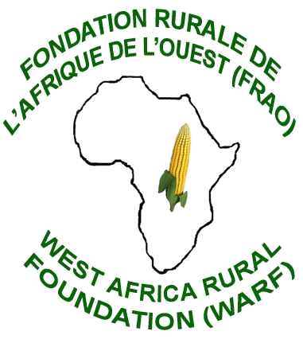

Découvrez comment la FRAO opère sur le terrain à travers nos différents programmes couvrant l'agriculture, le climat, l'autonomisation et la gouvernance, conçus pour bâtir des communautés rurales plus fortes en Afrique de l'Ouest.